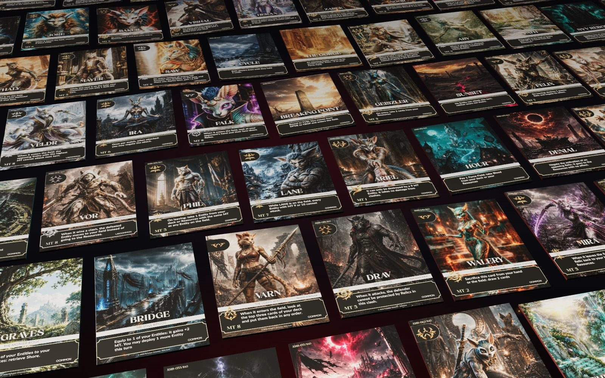
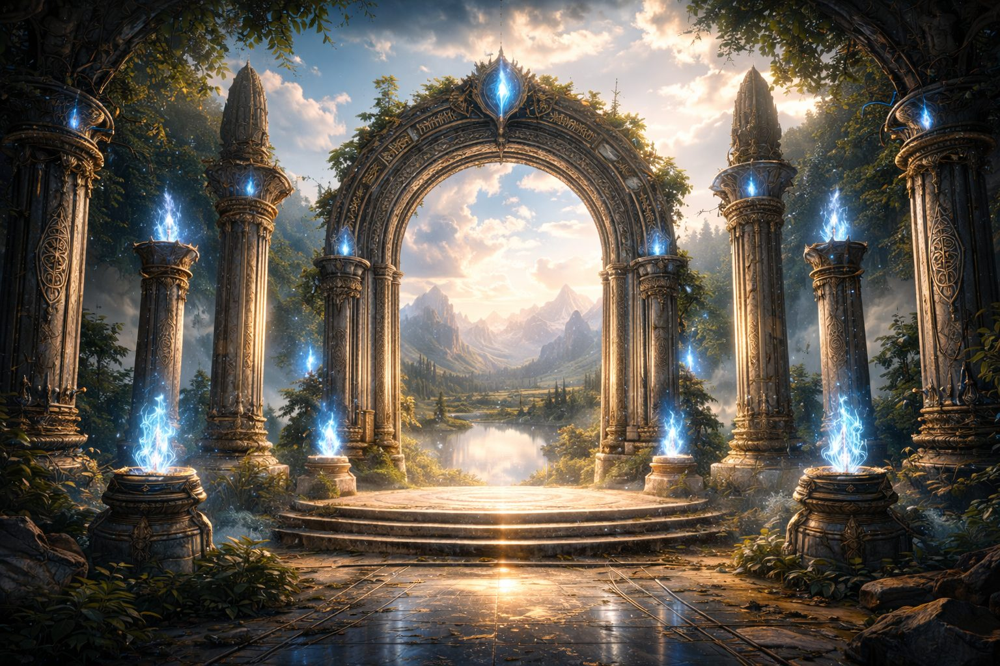

The Journey
From a single spark to a living universe. Every step taken, and every step still to come.
The Nyfurion saga began with the first 100 fragments. Each one a unique piece of the universe, where digital art and storytelling became one, and the world made its first contact with the public.
Fragments were released in waves, growing to 400 unique pieces. Quality and vision held firm, while the story began to live on social media through teasers, visuals and updates.
The universe deepened with new female characters, iconic locations and the ruins of a fallen city. Every promise made to the community was kept, every fragment enriched the myth.
Some fragments conceal secret evolutions, revealed slowly over time. A gentle face may hide a dark soul; a minor piece may become central. This is a living lore, never fully predictable.
The first book opened the world to everyone, even those new to crypto. Holders can suggest their own ideas for the lore.
A clear, transparent license defines what holders truly own and can create. Legal clarity, real trust, full creative freedom within the world.

The world of Nyfurion becomes playable: Nyfurion Clash, the card game, on app and on the web. Build your deck, choose your house and fight real players.
The cards leave the screen: printed cards and the official rulebook, to play Nyfurion at the table.
Printed QR cards, each one signed on the back with a single line from the book in development. Handed out in person in Lucca.
Every fragment has its 3D card ready to print in the holder vault. Photo packs of the characters are being added.

The saga becomes a book: Nyfurion X Reborn · The War of Balance. In development.
The ultimate goal: bring Nyfurion to television and streaming. If an official series is produced, the license sets aside 10% of the creator's net revenues for verified holders of the characters with a main role (License, Section 6). It is not a promise of profit.
Nyfurion opens its gates to artists, brands and creators. Holders can build real ventures, merchandise and stories from their fragments, giving the world value far beyond the digital.
You are early. Step into the world now.